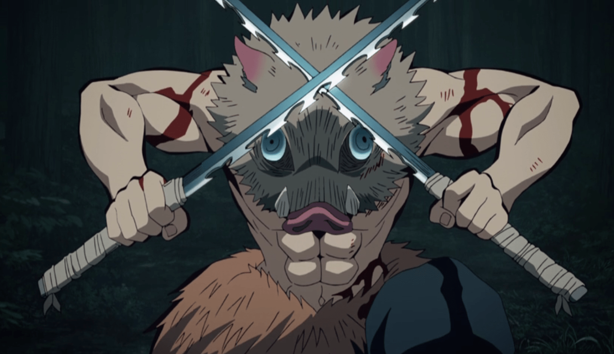
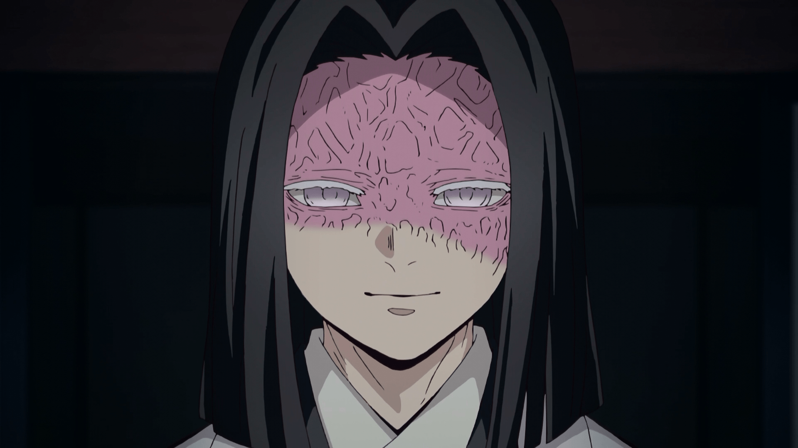
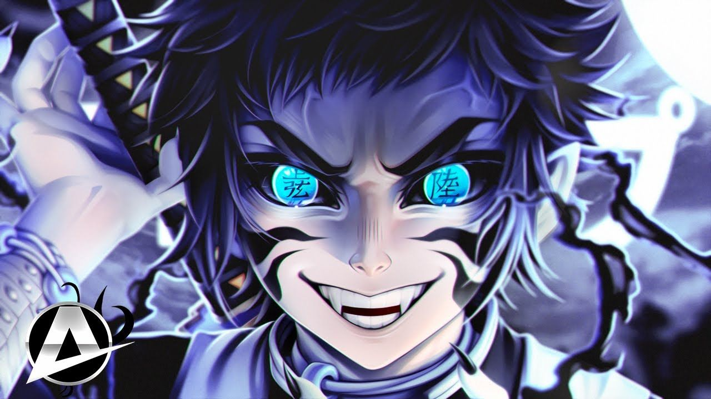

He is one of the most silent Hashira, his mother was sick at his childhood ,his father went to the mountains
to find medicine for tokito's mother.His father died on harsh weather and upon leaving the mountain, after
sometime her mother died.He was alone with his brother who liked him in an unattractive way.few months later
a demon arrived at their home and in order to save Muichirou his brother (Yuichirou) died.he than ragen
beneath himself and killed the demon.He performed mist breathing.
2. Sanemi Shinazugawa
He is the second powerful Hashira,his brother was Genya.On his childhood her mother suddenly became a demon
and in order to save his brother he killed his own mom , his brother hated him for killing their mom but he
didn't know that she had became a demon.He performed wind breathing.
3. Obanai Igoru
He belonged to a rich and dumb family who worships ,a snake like demon,the demon asks for his flesh after
cutting his face to eventually look like snake.He then tries to stay away from everyone and especially
womens(Exception Mitsuri Kanroji).He performed snake breathing.
4. Mitsuri Kanroji
Will be added,~She liked everyone~.She performed love breathing.
5. Shinobu Kocho
She was a Hashira who kills demon through poision,she was the least powerful Hashira.After Douma kills her
sister , she was raged and was anticipated to kill Douma.She performed insect breathing,she was also very
intelligent.She provided a innitial way to kill Muzan by giving him a medicine of aging.
6. Gyoumei Himejima
His family was killed from demon and he lived many childrens ,at a temple.One day a demon attacked them and
everyone was killed except a small girl,in order to protect the girl he was raged and he killed the demon
brutally.the girl sadly blames Gyomei for killing all childrens.He performs stone breathing.
7. Giyu Tomioka
He was taught from Urokodaki a former Hashira.He was Sabito's best friend and they learnt together.They then
went to the demon slayer selection round and in order to save Tomioka and everybody Sabito died.He was was
in deep sorrow after the death of Sabito.He performed water breathing.
8. Kyuojuro Rengoku
He was very brave and kind hearted Hashira.His father did not appritiate him for becoming a Hashira.In order
to save Tanjiro and all he died(He died when he fought Akaza uppper moon 3).He performed Flame breathing.
Demon Slayers(Former-Hashira)
1. Tengen Uzui
He was a former sound Hashira.He had 3 wifes(Makio,Suma,Hinatsuru).He loved them all.he faught upper moon 6
with Tanjiro,Inosuke and Zenitsu and they all won.He after being retired ,participated in Hashira-Tranning.
2. Sakonji Urokodaki
He was a former water Hashira and he taughts Sabito and Giyu .He also helped Tanjiro a lot.He helped Tanjiro
by protecting Nezuko.
3. Jigoro Kuwajima
He was a former thunder Hashira.He admires Zenitsu and taugt him thunder breathing first form.He also treats
Zenitsu in a good way .Zenitsu saw him as his grandpa.He was killed from his own student kaigaku , who had
became a demon.At last , Zenitsu killed Kaigaku.
4. Shinjuro Rengoku
He was in sorrow upon death of his wife .He was briefly admire of his son's (Rengoku's) achivement.Rengoku
also had a small brother.His past memories of his wife make him sad.When he met Tangiro and headr the death
of rengoku ,he just blames Rengoku .After sometime he realises the gravity of the situation and memorizes
his own son Rengoku.He was a former flame Hashira.
Main Characters
1. Kamado Tanjiro
His father ,one day performing hinokami kagura in harsh winter,died.Muzan came to his family and killed everyone
miraculously she turned into demon and tried to kill Tanjiro ,he tries to memorize the past.At that time Hashira
Giyu came and tries to kill Nezuko who had became a demon.Seeing the fighting skills of Tanjiro and his love
towards Nezuko. Giyu ought to protect Tanjiro and Nezuko.at the mugen train arc Rengoku died saving Tanjiro.He
performed sun breathing.He was a very kind hearted person.His will power was amazing.
2. Nezuko
She is the sisteer of Tanjiro and at the very starting when Tanjiro left the home Muzan came and killed
Tanjiro's family,but by getting Muzan's blood Nezuko had became a demon in order to cure Nezuko ,Tanjiro joined
the demon slayer co-orp.
3. Inosuke Hashibira

He thought that he was born through a boar .Later when living with Tanjiro he realises that he had a mother who
died saving Inosuke from Douma.He performed beast breathing.he also contir buted in Doumaand Muzan fight.
4. Zenitsu Agatsuma
He was very afraid kid.When he met Jigoro he thought that he had got his grandpa.He later came to seriousness
and killed kaigaku who killed Jigoro or his grandpa.He performed thuder breathing.
5. Kanae Kocho
She was just like Muichirou (quiet).When she met Tanjiro ,he makes him feel any situation .She was not able to
hold the situation from taking idea from her heart.At last she marry Tanjiro and contributed in Muzan fight.She
performed flower breathing.
6. Genya Shinazugawa
He is the brother of Sanemi Shinazugawa .He eventually ate a demon to get demonic powers yet,he was a human.He
sacrifised his life in Kokushibo fight.he doesn't perform any breathing style.
Side Characters
1. Tamayo
She was a demon and wanted to kill Kibutsiji Muzan.She was forgived from Yoriichi.She gave a huge contribution
in Muzan fight.
2. Yushiro
He was also a demon and like Lady Tamayo He gave a major role in controlling Nakime at infinity castle arc.
3. Kagaya Ubuyashiki

He formed the demon slayer organisation,his family had only one so and few daughters. His family was
cursed.Despite that he sacrifised himselfand his family (leaving Kiraya his only son).in order to kill Kibutsiji
Muzan.
Demons
1. Kibutsiji Muzan
He was the main demon king.1000 years ago ,Muzan was very sick and the doctor said he would not live for over
5-6 days,the doctor gave a medicine for dealing with Muzan's problem,the doctor was the one who, created a
medicine which made Muzan a demon.Muzan in anger killed the doctor but ,few days later Muzan realises that the
medicine had made him a demon and he was not immune to sunlight.He was finding a way to be immune to sunlight.
2. KoKushibo(upper moon 1)
He was the most powerful demon of Muzan's army.He was pretty jeleous of his brother Yoriichi,and wanted to be
more powerful than him.But,he can't Yoriichi was the one who gave Muzan nightmare.That's why he choose the
option to become a demon.He was a demon slayer and he performed moon breathing ,which has 16 forms.
3. Douma(upper moon 2)
He was a demon that Muzan likes ,He was only the one who was powerful because of his blood demon art.Doma (童どう磨ま
Dōma?) is a major supporting antagonist of Demon Slayer: Kimetsu no Yaiba. He is a demon affiliated with the
Twelve Kizuki, holding the second highest position, Upper Rank Two (上じょう弦げんの弐に Jōgen no Ni?).[3]
Over a century ago, Doma held the position of Upper Rank Six (上じょう弦げんの陸ろく Jōgen no Roku?),[4] and during that
tenure, he turned Gyutaro and Ume into demons and introduced them into the Twelve Kizuki.[5][6]
He is also the leader of the Eternal Paradise Faith,[7] a cult dedicated to worshipping Doma and a place where
he listens to all his followers' troubles and gives them advice.[8] He had held this position since he was a
human child. It also acts as a place for Doma to gather and kill his victims.[9] This cult also took in Inosuke
Hashibira's mother, Kotoha Hashibira,[10] before Doma killed her after finding out that he was eating his
followers.
1. Akaza(upper moon 3)
Akaza (猗あ窩か座ざ Akaza?) is a major supporting antagonist of Demon Slayer: Kimetsu no Yaiba. He is a demon
affiliated with the Twelve Kizuki, holding the position of Upper Rank Three (上じょう弦げんの参さん Jōgen no San?).
Over a century ago, Akaza was a human by the name of Hakuji (狛はく治じ Hakuji?), a prodigious martial artist who
trained under Keizo while nursing his daughter, Koyuki, who would later become Akaza's fiancée.
2. Hantengu(upper moon 4)
Hantengu (半はん天てん狗ぐ Hantengu?), along with Gyokko, was one of the primary antagonists in the Swordsmith Village
Arc of Demon Slayer: Kimetsu no Yaiba. He was a demon affiliated with the Twelve Kizuki, holding the position of
Upper Rank Four (上じょう弦げんの肆し Jōgen no Shi?). His most notable trait was his ability to manifest his emotions into
independent demons, all of which shared Hantengu's position.
Over two centuries ago, Hantengu was once a prolific thief and murderer, whose victims comprised of people who
drew attention to his duplicitous actions. He was sentenced to death as an elderly man but was visited by Muzan
Kibutsuji whilst awaiting execution, who transformed him into a demon and gave the criminal a new life.
3. Gyokko(upper moon 5)
Gyokko (玉ぎょ壺っこ Gyokko?), along with Hantengu, was one of the primary antagonists in the Swordsmith Village Arc
of Demon Slayer: Kimetsu no Yaiba. He was a demon affiliated with the Twelve Kizuki, holding the position of
Upper Rank Five (上じょう弦げんの伍ご Jōgen no Go?).
Before becoming a demon, he was a human by the name of Managi (益ま魚な儀ぎ Managi?).
3. Nakime(later became upper moon 4)
Nakime (鳴なき女め Nakime?) is a recurring character and a supporting antagonist in the Infinity Castle Arc of Demon
Slayer: Kimetsu no Yaiba. She is a demon who owns and controls the Infinity Castle and serves directly under
Muzan Kibutsuji.
Some time after Hantengu's death during the battle in the Swordsmith Village, Nakime attains the position of
Upper Rank Four (上じょう弦げんの肆し Jōgen no Shi?) in the Twelve Kizuki.
1. Daki and Gyutaro(upper moon 6)
Gyutaro (妓夫ぎゅう太た郎ろう Gyūtarō?) was one of the primary antagonists in the Entertainment District Arc of Demon
Slayer: Kimetsu no Yaiba. He was a demon affiliated with the Twelve Kizuki, holding the position of Upper Rank
Six (上じょう弦げんの陸ろく Jōgen no Roku?), a position he shared with his younger sister, Daki.
Over a century ago during the Edo period, Gyutaro was a human who worked as a debt collector in the Rashomon
Riverbank of Yoshiwara, the lowest class in the Entertainment District, before he and Daki were turned
into demons personally by Doma, who was Upper Rank Six at the time.
3. Kaigaku(later became upper moon 6)

Kaigaku is one of the supporting antagonists in the Infinity Castle arc in Demon Slayer. Originally, Kaigaku was
a demon slayer who was a disciple under the former thunder Hashira, Jigoro Kuwajima, along with Zenitsu.
However, after a fateful meeting with Kokushibo, the Upper Rank One demon of the Twelve Kizuki, he surrenders to
save himself.
2. Enmu(lower moon 1)
Enmu (魘えん夢む Enmu?) was the primary antagonist in the Mugen Train Arc of Demon Slayer: Kimetsu no Yaiba. He was a
demon affiliated with the Twelve Kizuki, holding the position of Lower Rank One (下か弦げんの壱いち Kagen no Ichi?).
3. Rui(lower moon 5)
Rui (累るい Rui?) was the primary antagonist in the Mount Natagumo Arc of Demon Slayer: Kimetsu no Yaiba. He was a
demon affiliated with the Twelve Kizuki, holding the position of Lower Rank Five (下か弦げんの伍ご Kagen no Go?).His
childhood was same like Muzan.
Legend(Yoriichi Tsugikuni)
Yoriichi Tsugikuni (継つぎ国くに 縁より壱いち Tsugikuni Yoriichi?) is a major recurring character in Demon Slayer: Kimetsu
no Yaiba. He is a Demon Slayer who lived nearly 500 years ago during the Sengoku era. He was the most
powerful Demon Slayer to have ever existed.
He is also the inventor of Breathing Styles, being the one who created the first ever Breathing Style, Sun
Breathing, that would eventually become the Hinokami Kagura used by Tanjiro Kamado and members of the Kamado
Family and the five fundamental styles taught to all Demon Slayers.
Yoriichi is the younger twin brother of Michikatsu Tsugikuni, who later became a demon and joined the Twelve
Kizuki.
The Infinity Castle Arc (無む限げん城じょう編へん Mugen-jō Hen?) is the first half of the overarching Final Battle
Arc, and the eleventh story arc of Kimetsu no Yaiba.
The Demon Slayer Corps plunges into the Infinity Castle to defeat Muzan. Shinobu engages in a fierce
fight against Doma, the Upper-Rank 2 demon. Poison doesn't work on him, so she finds herself in an
intense struggle. Will she be able to defeat the demon who killed her older sister?! Then another demon
appears before Zenitsu and blocks his way.
Tanjiro and Tomioka confront Akaza, the Upper-Rank 3 demon. Against Akaza's overwhelming strength, the
two find themselves unable to do anything but defend themselves. With the situation looking grim,
Tanjiro awakens to the "Transparent World" his father once told him about. Will this new knowledge allow
Tanjiro to turn the tables and go on the offensive against Akaza?